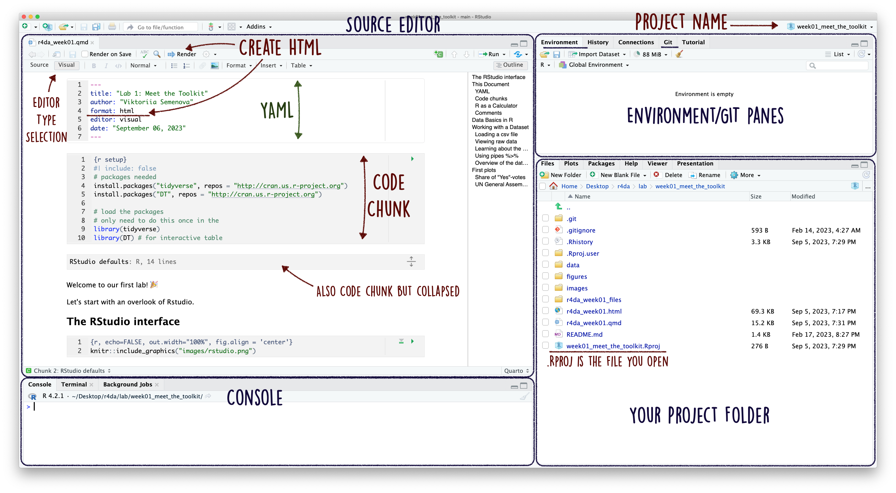
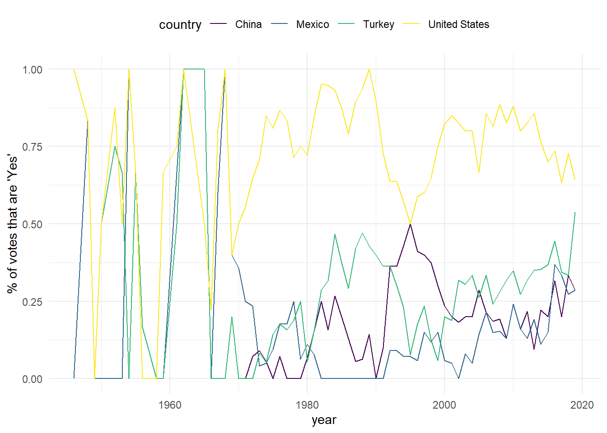
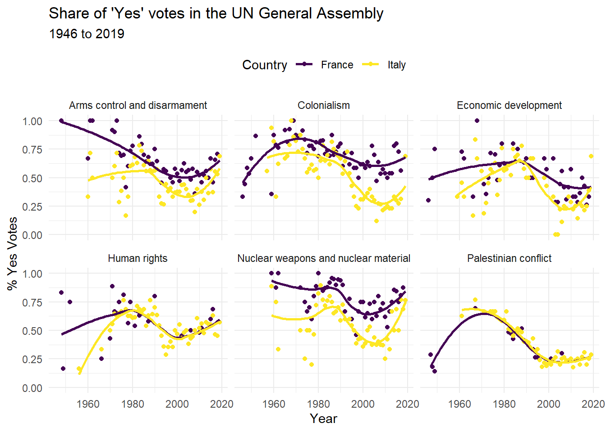

Lab 1: Meet the Toolkit
The RStudio interface
By default, you will see these panes:
- Editor: This is were you usually code. You can open many different kinds of documents here. We will mostly be using Quarto documents (with a .
qmdextension, Quarto Markdown), but you will see people use.Rmd(R Markdown) or.R(plain R code) files. - Console: This is where the results appear once you execute your R-code. You can also directly type R-code into the console and execute it. This code does not get saved in your files, so better write in the Editor. When no code is executing, we see a
>on the last line. - Environment, History, Connections, Git, Tutorial: Two are relevant for us:
In the Environment you have an overview over all the objects currently loaded in your environment (like datasets for example). You will learn more about objects later in the course.
In Git we will use version control and communicate to GitHub.
- Files, Plots, Packages, Help, Viewer: Plots and other things will appear here, don’t worry too much about it for the moment.
Working with Rstudio Projects
RStudio allows for a clean organisation of your work using Projects. If you have an Rstudio project associated with the folder, there will be a file there with extension .RProj. Always open the .RProj file when opening the existing project, and not .qmd directly. In general, you usually need to specify your working folder (aka directory) when working with such programs as R or Stata. This is where your files will be stored automatically and from where files will be loaded too. Projects simplifies this step by setting the working folder to its location. Moreover, our integration with Git will only work when you open the correct Project.
This Document
YAML
The top portion of this file (between the three dashed lines) is called YAML (/ˈjæməl/). It is a human-friendly data serialization standard for all programming languages. All you need to know is that this area is called the YAML (we will refer to it as such) and that it contains meta information about your document, such as the title, date, and the desired output format.
Code chunks
With qmd/rmd files, you can write both text and code in the same file. You can insert new code chunks by clicking the green icon above or with a shortcuts: Ctrl + Alt + I/Cmd + Option + I. Here are some basic examples. By default, all these will be chunks for R code, as {r} in line 1 of the chunk tells us. Some additional information in that line like {r, echo=FALSE, out.width="100%", fig.align = 'center'} in the chunk above specifies how and whether the code inside that chunk is evaluated and dictates how the output of this chunk looks like (e.g., the width of the image). You will learn these details gradually through the semester.
R as a Calculator
5 + 7 ## R can be a calculator[1] 122 - 3[1] -14 * 5[1] 202^2[1] 44 / 2[1] 22^(1 / 2)[1] 1.414214If you place parentheses correctly, R incorporates the order of operations.
((1 + 2) * 2)^2[1] 36# (3 * 2)^2You can also use other math functions you know from your calculator:
# square root function (aka command)
sqrt(x = 2) # x is an argument[1] 1.414214sqrt(2) # also works without writing "x" explicitly[1] 1.414214Data Basics in R
Now let’s actually store something in R. This something will be called an object. Objects can contain information of different data types:
| Numeric | Numbers | c(1, 2.4, 3.14, 4) |
| Character | Text | c("1", "blue", "fun", "monster") |
| Logical | True or false | c(TRUE, FALSE, TRUE, FALSE) |
| Factor | Category | c("Strongly disagree", "Agree", "Neutral") |
We will start with the first three kinds, and add factors later during the semester.
Let’s see an example:
# number of semesters you are in Mannheim
study_semester <- 12
# now we created an (numeric) object called "study_semester"
study_semester[1] 12Now you can see the object study_semester in the Environment tab.
The class() command lets us check the type of an object, so to understand the kind of information is in the object:
class(study_semester)[1] "numeric"We can also create objects of other kinds similarly:
first_name <- "" # this is a character object
first_name[1] ""class(first_name)[1] "character"last_name <- ""
last_name[1] ""female <- TRUE # this is a logical objectWe can also remove and overwrite objects:
# removes the object
rm(last_name)
# assigning a new value overwrites the object
study_semester <- "12"
study_semester[1] "12"class(study_semester)[1] "character"study_semester <- "twelve"
study_semester[1] "twelve"class(study_semester)[1] "character"We will obviously not be working with a single value, but rather with many values stored in the same object all at once.
There are various kinds of data structures R can handle. Here are some of them:
- Vector: sets of scalars (i.e., 1+ of numbers, characters, logical)
- Matrix: two-dimensional set of scalars of same type
- Data frame: collections of vectors of (possibly) different types
- Array: multidimensional set of scalars of same type
- List: combinations of scalars, vectors, matrices…
Here are some examples for each:
vector <- c(1, 3, 8)
vector[1] 1 3 8another_vector <- c("one", "three", "eight")
another_vector[1] "one" "three" "eight"yet_another_vector <- c(TRUE, FALSE, TRUE)
yet_another_vector[1] TRUE FALSE TRUE# 2 by 2 matrix with numeric values
matrix <- matrix(data = c(1, 2, 3, 4), nrow = 2)
matrix [,1] [,2]
[1,] 1 3
[2,] 2 4# combine the vectors from above into a data frame
df <- data.frame(vector, another_vector, yet_another_vector)
df vector another_vector yet_another_vector
1 1 one TRUE
2 3 three FALSE
3 8 eight TRUE# we can also recode objects
df <- as.data.frame(matrix)
df V1 V2
1 1 3
2 2 4# arrays are like stacked matrices
array(data = 1:6, c(2, 3)) [,1] [,2] [,3]
[1,] 1 3 5
[2,] 2 4 6array(data = 1:8, c(2, 2, 2)), , 1
[,1] [,2]
[1,] 1 3
[2,] 2 4
, , 2
[,1] [,2]
[1,] 5 7
[2,] 6 8# lists can store various types of objects at once
ls <- list("5", vector, yet_another_vector, matrix)
ls[[1]]
[1] "5"
[[2]]
[1] 1 3 8
[[3]]
[1] TRUE FALSE TRUE
[[4]]
[,1] [,2]
[1,] 1 3
[2,] 2 4Since R was created as a language for data analysis, it is very easy to work with datasets, which contain combinations of variables (think of variables as vectors). We will mostly be working with dataframes in this class.
Working with a Dataset
Data usually needs to be loaded into R rather than entered by hand. R can load multiple objects into the environment, which means it can load multiple datasets at once. Let’s start with one.
Loading a csv file
Let’s take a look at the voting history of countries in the United Nations General Assembly. I have prepared the dataset for you and it is located in the data subfolder of our project. Our dataset comes in a common format of comma separated values (extension csv). This means that values in a dataset are separated with a comma (and not a period or tab or something else) and system will detect columns based on these commas. There are different ways to load it, but we will be using a function from the readr package from tidyverse universe to load the dataset into the environment.
These are the steps you normally need to do when working with a function from an external package:
# install the package
# only needs to be done once on your machine
# better put all the installation stuff in the setup chunk
# install.packages("readr")
# load the package
# needs to be done every time you come back to working on the project
library(readr)Advice: use short but descriptive names for objects: e.g., df is short but not descriptive, but votes_from_un_general_assembly may be too long.
We also need to tell R where to find the file. Here let’s distinguish between relative and absolute file paths. An absolute path always contains the root element and the complete directory list required to locate the file. This is what people would call an absolute path to dataset.csv object:
C:/Users/viktoriia/path/on/my-laptop/project-folder/data/dataset.csvThese will differ across computers, so using absolute paths should be a no-go.
A relative path needs to be combined with another path in order to access a file. If we are located in the project folder, to access the same file dataset.csv located in the data subfolder in the project folder, we will need to write this:
data/dataset.csvOur loading of the file becomes very straightforward:
un_votes <- read_csv("data/un_votes.csv")Rows: 59284 Columns: 5
── Column specification ────────────────────────────────────────────────────────
Delimiter: ","
chr (2): country, issue
dbl (3): year, votes, percent_yes
ℹ Use `spec()` to retrieve the full column specification for this data.
ℹ Specify the column types or set `show_col_types = FALSE` to quiet this message.Advice: do not make R print out full datasets (like in the chunk below).
un_votes # don't do this# A tibble: 59,284 × 5
country year issue votes percent_yes
<chr> <dbl> <chr> <dbl> <dbl>
1 Afghanistan 1946 Colonialism 5 0.8
2 Afghanistan 1946 Economic development 6 0.667
3 Afghanistan 1946 Human rights 1 1
4 Afghanistan 1947 Colonialism 8 0.5
5 Afghanistan 1947 Economic development 2 0.5
6 Afghanistan 1947 Palestinian conflict 7 0.857
7 Afghanistan 1948 Colonialism 12 0.0833
8 Afghanistan 1948 Arms control and disarmament 9 1
9 Afghanistan 1948 Economic development 8 0.75
10 Afghanistan 1948 Human rights 6 0.833
# ℹ 59,274 more rowsViewing raw data
The first thing to do when loading the data would be to check that it loaded correctly. If it’s a small dataset, you can just look at the raw data. You can view the dataset as a spreadsheet using the View() function. Note that you should not put this function in your qmd file, but instead type it directly in the Console, as it pops open a new window (and the concept of popping open a window in a static document doesn’t really make sense…). When you run this in the console, you’ll see the following data viewer window pop up. Though most often looking at raw data won’t be too helpful anyway.
Learning about the dataset
Let’s first check that there are columns and rows in the data:
nrow(un_votes) # number of rows[1] 59284ncol(un_votes) # number of columns[1] 5dim(un_votes) # rows columns together (Roller Coaster)[1] 59284 5We may also now want to see the names of the variables, the columns:
colnames(un_votes)[1] "country" "year" "issue" "votes" "percent_yes"We can use more than one function at once. Can you guess what length command does here?
length(colnames(un_votes))[1] 5Using pipes %>%
A slightly more intuitive way to write the same thing would be with a pipe %>%. This thing comes from tidyverse package, so you need to load it. When you will need to write long code with multiple functions applied step-by-step, it will become very straightforward to follow the steps if you use pipes.
FYI: Recently, R has added their native pipe which looks like |>. You do not need any packages to use it, but for a number of reasons I will stick to the tidyverse one (%>%) in this class. If that is what you are used to, you are welcome to use it instead.
colnames(un_votes) %>% # take the vector colnames(students)
length() # return the length of this vector[1] 5un_votes %>% # take the object students
colnames() %>% # get column names vector
length() # return the length of this vector[1] 5Overview of the dataframe
There are multiple functions in R that you can use to have a more detailed overlook of the data.
If you just want to look at the first/last few rows (observations), you can do it with head or tail. If you don’t specify the number of rows you want to see with n = 10 argument, by default you will see six rows.
head(un_votes)# A tibble: 6 × 5
country year issue votes percent_yes
<chr> <dbl> <chr> <dbl> <dbl>
1 Afghanistan 1946 Colonialism 5 0.8
2 Afghanistan 1946 Economic development 6 0.667
3 Afghanistan 1946 Human rights 1 1
4 Afghanistan 1947 Colonialism 8 0.5
5 Afghanistan 1947 Economic development 2 0.5
6 Afghanistan 1947 Palestinian conflict 7 0.857tail(un_votes, n = 10)# A tibble: 10 × 5
country year issue votes percent_yes
<chr> <dbl> <chr> <dbl> <dbl>
1 Zimbabwe 2018 Economic development 18 0.167
2 Zimbabwe 2018 Human rights 22 0.318
3 Zimbabwe 2018 Palestinian conflict 16 0.0625
4 Zimbabwe 2018 Nuclear weapons and nuclear material 16 0.0625
5 Zimbabwe 2019 Colonialism 16 0.312
6 Zimbabwe 2019 Arms control and disarmament 16 0.312
7 Zimbabwe 2019 Economic development 16 0.312
8 Zimbabwe 2019 Human rights 14 0.286
9 Zimbabwe 2019 Palestinian conflict 14 0
10 Zimbabwe 2019 Nuclear weapons and nuclear material 17 0.412 To have an overlook of the dataset variables with some descriptive statistics (for numeric variables), number of missing values, and class for non-numeric variables, we can use summary command:
summary(un_votes) country year issue votes
Length:59284 Min. :1946 Length:59284 Min. : 1.00
Class :character 1st Qu.:1977 Class :character 1st Qu.: 9.00
Mode :character Median :1993 Mode :character Median :14.00
Mean :1991 Mean :14.47
3rd Qu.:2006 3rd Qu.:20.00
Max. :2019 Max. :41.00
percent_yes
Min. :0.0000
1st Qu.:0.0000
Median :0.1053
Mean :0.2091
3rd Qu.:0.3333
Max. :1.0000 This is usually useful to make sure that the variables in the dataset were read correctly (e.g., the ones that you expect to be numeric, such as age, would actually be numeric).
Another command that produces much output at once would be glimpse from dplyr.
glimpse(un_votes)Rows: 59,284
Columns: 5
$ country <chr> "Afghanistan", "Afghanistan", "Afghanistan", "Afghanistan"…
$ year <dbl> 1946, 1946, 1946, 1947, 1947, 1947, 1948, 1948, 1948, 1948…
$ issue <chr> "Colonialism", "Economic development", "Human rights", "Co…
$ votes <dbl> 5, 6, 1, 8, 2, 7, 12, 9, 8, 6, 11, 3, 14, 3, 5, 6, 14, 3, …
$ percent_yes <dbl> 0.80000000, 0.66666667, 1.00000000, 0.50000000, 0.50000000…And lastly, one pretty useful function is unique(), which allows us to see only the unique values in the vector/column of a dataset. Let’s look at what issue areas we have in the dataset:
un_votes$issue %>%
unique()[1] "Colonialism"
[2] "Economic development"
[3] "Human rights"
[4] "Palestinian conflict"
[5] "Arms control and disarmament"
[6] "Nuclear weapons and nuclear material"How would you count the number of unique issue areas?
un_votes$issue %>%
unique()[1] "Colonialism"
[2] "Economic development"
[3] "Human rights"
[4] "Palestinian conflict"
[5] "Arms control and disarmament"
[6] "Nuclear weapons and nuclear material"First plots
Now let’s move to the fun part–some data visualization! For now, I will tell you that we are using the package ggplot2 for building the plots. We will go through the process of creating a plot step-by-step next week, so for now you will need to just look at the anatomy and run the code in the chunk below.
UN General Assembly Vote Trends
First, let’s take a look at how often each country voted “yes” on a resolution in each year. We’ll visualize the results, so let’s pick a few countries of interest first.
country_list <- c("United States", "China", "Mexico", "Turkey")And let’s only look at Human Rights votes for now.
un_votes %>% # take the dataset
filter(
country %in% country_list, # select rows for countries in from country_list
issue %in% c("Human rights") # select cases for human rights votes
) %>%
ggplot(mapping = aes(x = year, y = percent_yes, color = country)) +
geom_line() +
labs(y = "% of votes that are 'Yes'") +
theme_minimal() + # change the appearance
scale_color_viridis_d() + # change the color
theme(legend.position = "top") # change legend position
Next, let’s see how Italy and France’s voting record changed over the years on each of the issues. Run the code below and look at the plot to find out what is depicted there.
un_votes %>% # take the dataset
filter(
country %in% c("Italy", "France"), # select the countries to work with
votes > 5 # only use records where there are more than 5 votes
) %>%
ggplot(mapping = aes(
x = year, # over horizontal axis
y = percent_yes, # over vertical axis
color = country
)) +
geom_point() + # add points
geom_smooth(method = "loess", se = FALSE) + # add trend line
facet_wrap(~issue) + # split by issue
labs(
title = "Share of 'Yes' votes in the UN General Assembly",
subtitle = "1946 to 2019",
y = "% Yes Votes",
x = "Year",
color = "Country"
) +
theme_minimal() + # change the appearance
scale_color_viridis_d() + # change the color
theme(legend.position = "top") # change legend position`geom_smooth()` using formula = 'y ~ x'
Comments
The chunks above contain not just the code but also comments, so the text that is not executed (evaluated by
R). You have two options for writing normal text inqmd/rmdfiles: as plain text (as this is written), and inside the chunk with comments (adding a hash symbol#so that everything on that line after the#gets commented out). Reserve comments for technical things and small notes, but if you need to write a sentence (like when answering questions in the problem sets for this class or actually writing a paper), use the Markdown part.Word of advice: don’t be lazy, use comments even if you are not planning to share the code, you will thank yourself later. With comments, other people can better understand your code (say when I am grading your work or when you are working together on a problem set). But also, you can remember what you were doing when you come back to your code after some time (e.g., to prepare the final project at the end of the semester).
This is how you add a comment: